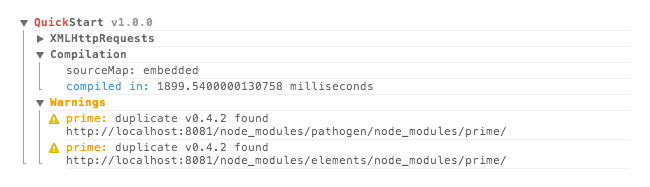

// Install globally for CLI
npm install quickstart -g
// Navigate to your project
cd path/to/app
// Install QuickStart locally
npm install quickstart
Reference the file that QuickStart builds for you and it will run your code. QuickStart can either run in dev mode, where it compiles the code when you reload the browser, or in production mode, where you compile it first and then run the pre-compiled file.
The entry point of your code is specified in the main field in your package.json file.
index.html
<script src="compiled.js"></script>
index.js
var _ = require('underscore');
var throttled = _.throttle(updatePosition, 100);
window.addEventListener('scroll', throttled, false);
package.json
{
"main": "index.js"
}
While developing your app, QuickStart can automatically recompile everything on each reload. This makes it easy to test your changes and doesn't require you to run any file watcher.
// Build a dev mode compiler
quickstart --self > compiled.js
When you want to build for production, you should run QuickStart again, but this time to compile your entire app into a single file.
// Compile the entire app
quickstart > compiled.js
When QuickStart is compiling, it will give you a short summary of the build in a nicely grouped console output. It will even tell you about duplicated packages to make you aware that the build is not optimized and that you should use npm dedupe. Here is a screenshot from Chrome Developer Tools:
